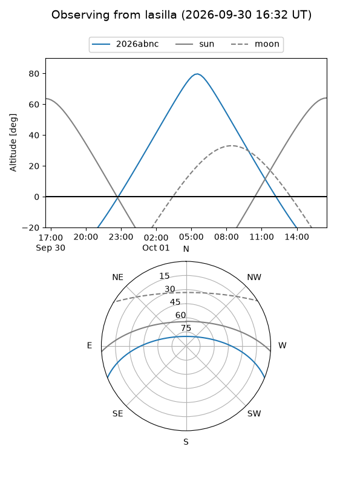
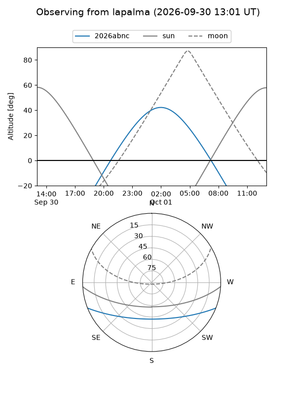
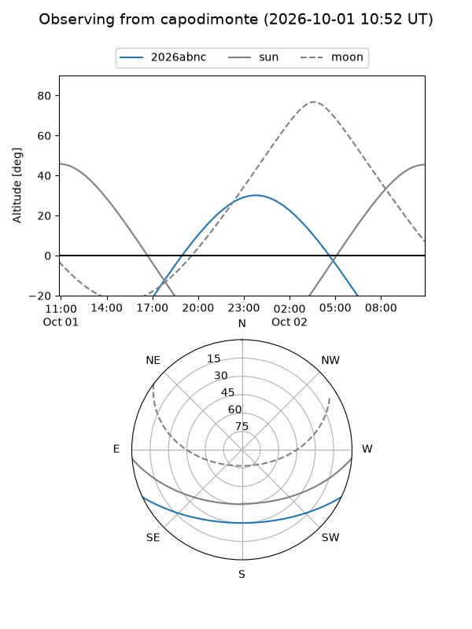
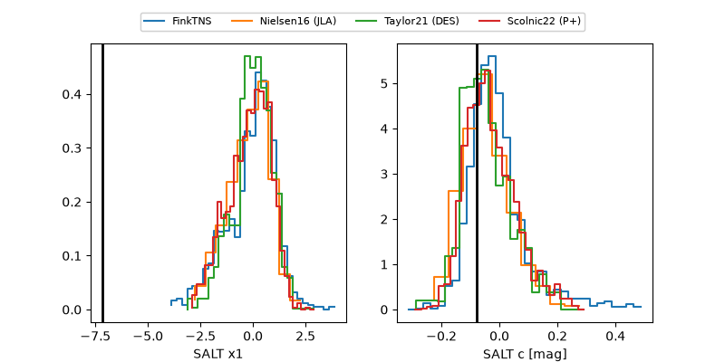

2026abnc
Target 2026abnc at 2026-10-01 13:33
Aliases and brokers:
FINK-ZTF: ztf.fink-portal.org/ZTF26abtvjux
Lasair-ZTF: lasair-ztf.lsst.ac.uk/objects/ZTF26abtvjux
ALeRCE-ZTF: alerce.online/object/ZTF26abtvjux
YSE-PZ: ziggy.ucolick.org/yse/transient_detail/2026abnc
TNS name: wis-tns.org/object/2026abnc
Direct TNS query: direct search
alt names
ZTF26abtvjux (ztf,fink_ztf)
2026abnc (tns,yse)
PS26hom (panstarrs)
Coordinates:
equatorial (ra, dec) = 21.3120,-19.14664
equatorial (HMS+DMS) = 01:25:14.87,-19:08:47.92
galactic (l, b) = (168.9143,-78.86666)
Flags:
TNS type: nan
peak dt: +14.8
Photometry:
last ztfg=19.77, ztfr=20.02
3 ztfg, 4 ztfr detections
Lightcurve
Visibility



Additional plots
